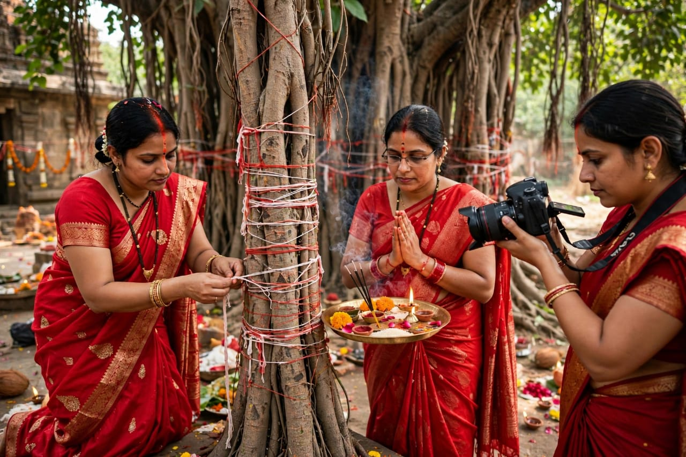

About Vat Savitri
Vat Savitri is a traditional Hindu festival observed mainly by married women in several parts of India. The festival is associated with the story of Savitri and Satyavan and is traditionally connected with prayers for the well-being and prosperity of the family.
On this day, women traditionally visit a banyan tree, known as the Vat tree, and perform prayers and rituals. They may decorate the tree with sacred threads and offer flowers, fruits and other items. The banyan tree has an important place in the traditional rituals of the festival.
The festival is based on the story of Savitri's devotion and determination. Families observe the day with prayers and traditional customs. Vat Savitri also reflects the importance of nature, family traditions and cultural values in Indian society.
Special Foods

Puran Poli
A traditional sweet flatbread enjoyed during festive occasions.

Kheer
A sweet dish made with milk, rice and sugar.

Laddu
A popular Indian sweet prepared for celebrations.